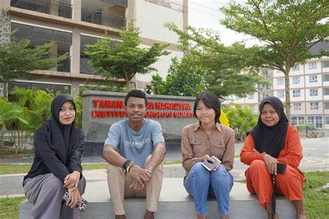

Peminat Terbanyak Program Studi di ITERA Tahun 2024

Berdasarkan data dari laman SNPMB Kemdikbud,Sebanyak 1.732 pendaftar lolos Seleksi Nasional Berdasarkan Prestasi di Institut Teknologi Sumatera (Itera) dari total pendaftar 7.245 orang, yang diumumkan Selasa, 26 Maret 2024. Rektor Itera Prof. Dr. I Nyoman Pugeg Aryantha, menyampaikan, sebelum dinyatakan lolos, peserta telah melalui tahapan seleksi yang cukup ketat melalui perankingan nilai rapor SMA/Sederajat, serta penilaian sertifikat prestasi yang dimiliki. Sementara Wakil Rektor Bidang Akademik dan Kemahasiswaan Itera, Prof. Dr. Eng. Khairurrijal, M.Si., menjelaskan sebanyak 1.732 peserta yang dinyatakan lolos tersebut tersebar di 41 program studi (prodi) yang ada di Itera termasuk program studi baru yakni S1 Rekayasa Keolahragaan yang pertama kali diikutsertakan dalam jalur SNBP. Adapun lima program studi dengan pendaftar terbanyak jalur SNBP tahun ini yaitu,
| No |
Proram Studi |
Daya Tampung 2025 |
Peminat 2024 |
| 1 |
Farmasi |
56 |
909 |
| 2 |
Teknik Informatika |
66 |
811 |
| 3 |
Teknik Pertambangan |
57 |
604 |
| 4 |
Teknik Industri |
48 |
412 |
| 5 |
Teknik Sipil |
63 |
375 |
| 6 |
Teknologi Pangan |
45 |
310 |
| 7 |
Teknik Biomedis |
44 |
295 |
| 8 |
Teknik Elektro |
51 |
222 |
| 9 |
Teknik Perkeretaapian |
27 |
212 |
| 10 |
Perencanaaan Wilayah dan Kota |
63 |
207 |
Prof. Khairurrijal menambahkan, kuota penerimaan mahasiswa baru Itera tahun ini berjumlah sekitar 5.200 mahasiswa baru yang akan diterima melalui jalur SNBP, SNBT, dan jalur mandiri. Khusus untuk jalur SNBP, jumlah calon mahasiswa yang diterima sebesar 30% dari total mahasiswa baru Itera tahun 2024. Sementara untuk jalur Seleksi Nasional Berdasarkan Tes (SNBT), Itera tahun ini mengalokasikan kuota lebih besar, yaitu 65% dari total mahasiswa baru yang akan diterima.